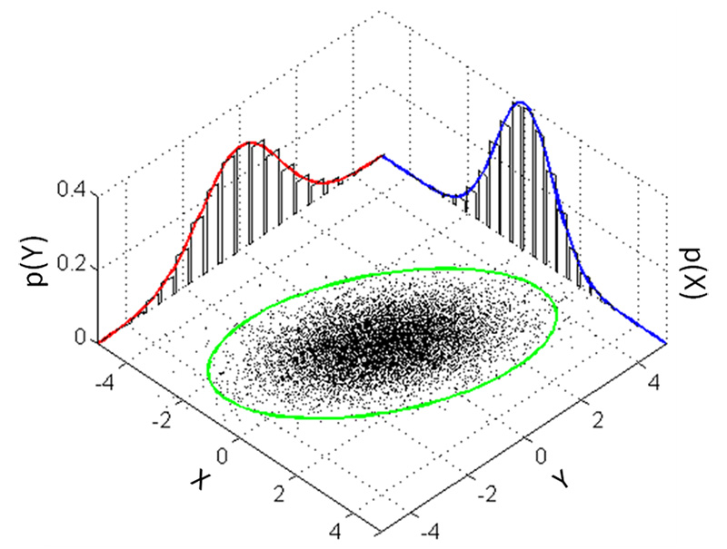

输入静态场景的图像集，使用SFM方法的COLMAP校准的相机构建点云，为每一个点提供一个初始的3d gaussian 每个3D Gaussian包含一系列可优化的参数包括gaussian的均值，球谐系数等，给定相机视角，将3D Gaussian投影到2D平面上。再对其和真是的图像计算loss进行优化
为了应对欠重建和过重建，在训练期间还会每隔一定间隔，对那些均值self._xyz的梯度超过一定阈值且尺度小于一定阈值的3D gaussian进行克隆操作，对于那些均值self._xyz的梯度超过一定阈值且尺度大于一定阈值的3D gaussian进行分割操作，并将opacity小于一定阈值的3D gaussians进行删除
1. 相较于Nerf使用隐式建模的方法，使用3D Gaussian作为显示建模的primitive，可以走光栅化管线 2. 3D Gaussian可以作为小型可微空间进行优化，不同3D Gaussian则能够像三角形一样并行光栅化渲染，可以看成是在可微和离散之间做了一个微妙平衡。
通过和协方差矩阵来控制3D Gaussian椭球的中心点位置和椭球的三轴向的伸缩和旋转
Example：
一维正态分布的概率密度函数为
其均值为控制其图像位置，方差控制其图像的宽度，大部分数据落在区间内，因此可以说和可以确定一条线段
二维正态分布的概率密度函数为
其中为相关系数，和分别为和的标准差，和分别为和的均值，和分别为和的方差，为和的协方差

class GaussianModel:
def __init__(self, sh_degree:int):
self.active_sh_degree = 0
self.max_sh_degree = sh_degree
self._xyz = torch.empty(0) # 中心点位置, 也即3Dgaussian的均值
self._features_dc = torch.empty(0) # 第一个球谐系数, 球谐系数用来表示RGB颜色
self._features_rest = torch.empty(0) # 其余球谐系数
self._scaling = torch.empty(0) # 尺度
self._rotation = torch.empty(0) # 旋转参数, 使用四元数，四元数相比旋转矩阵，容易进行插值
self._opacity = torch.empty(0) # 不透明度
self.max_radii2D = torch.empty(0) # 投影到2D时, 每个2D gaussian最大的半径
self.xyz_gradient_accum = torch.empty(0) # 3Dgaussian的均值的累积梯度
self.denom = torch.empty(0)
self.optimizer = None # 上述各参数的优化器
self.percent_dense = 0
self.spatial_lr_scale = 0
self.setup_functions()
3D Gaussian对的基本要求是半正定，因此从数值角度不好入手，直接从几何上手。由于3D Gaussian同构于椭球，只需对球进行基础的拉伸（轴向）旋转变化即可，所以
由于放缩变换都是沿着坐标轴，所以只需要一个3D向量，旋转则用四元数表达
class GaussianModel:
def setup_functions(self):
# 从尺度和旋转参数中去构建3Dgaussian的协方差矩阵
def build_covariance_from_scaling_rotation(scaling, scaling_modifier, rotation):
L = build_scaling_rotation(scaling_modifier * scaling, rotation)
actual_covariance = L @ L.transpose(1, 2)
symm = strip_symmetric(actual_covariance)
return symm
self.scaling_activation = torch.exp # 将尺度限制为非负数
self.scaling_inverse_activation = torch.log
self.covariance_activation = build_covariance_from_scaling_rotation
self.opacity_activation = torch.sigmoid # 将不透明度限制在0-1的范围内
self.inverse_opacity_activation = inverse_sigmoid
def build_scaling_rotation(s, r):
L = torch.zeros((s.shape[0], 3, 3), dtype=torch.float, device="cuda")
R = build_rotation(r)
L[:,0,0] = s[:,0]
L[:,1,1] = s[:,1]
L[:,2,2] = s[:,2]
L = R @ L
return L
def strip_symmetric(sym):
return strip_lowerdiag(sym)
def strip_lowerdiag(L):
uncertainty = torch.zeros((L.shape[0], 6), dtype=torch.float, device="cuda")
uncertainty[:, 0] = L[:, 0, 0]
uncertainty[:, 1] = L[:, 0, 1]
uncertainty[:, 2] = L[:, 0, 2]
uncertainty[:, 3] = L[:, 1, 1]
uncertainty[:, 4] = L[:, 1, 2]
uncertainty[:, 5] = L[:, 2, 2]
return uncertainty
在自适应优化中生成新椭球：
continue...
先使用view变换到相机空间，再使用project变换到透视空间进行光栅化
因为3D Gaussian是一个3D分布，我们希望他在进行变换中继续保持这个分布，view变换是仿射变换，对其没有影响，但是project变换不能保证，因此在论文中使用来对project进行仿射近似
submodules/diff-gaussian-rasterization
forward.cu
1.对每个gaussian进行预处理，得到其半径以及覆盖了哪些tile
2.对每一个tile，使用splatting技术渲染
continue...
mpm